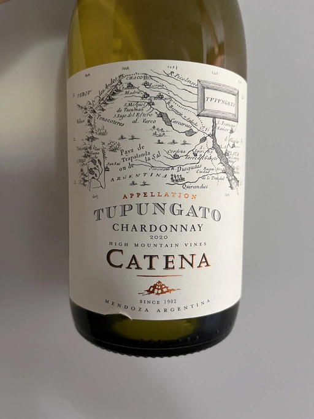
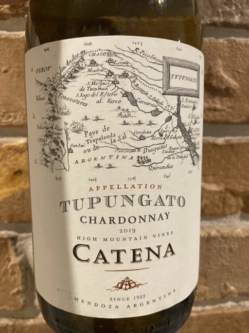
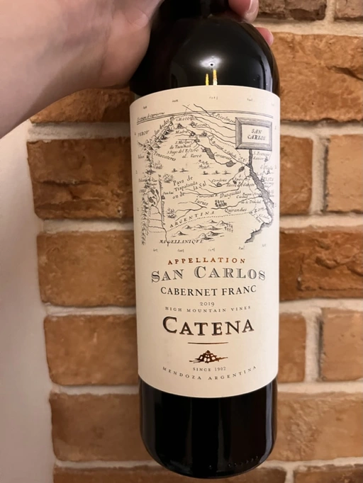
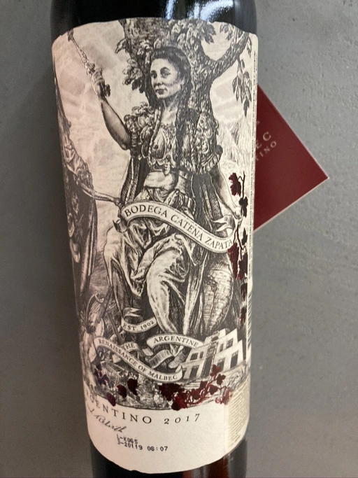
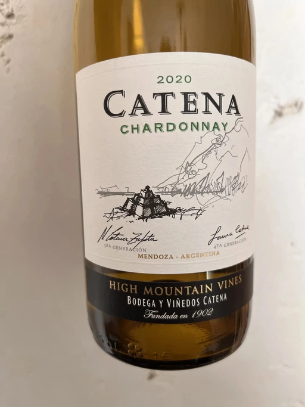
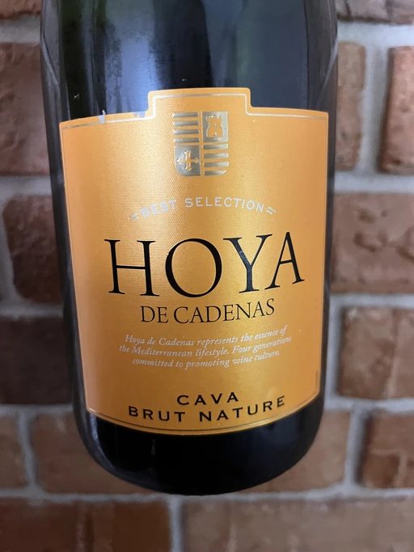

- Type
- White Still, Dry
- Producer
- Bodega Catena Zapata
- Vintage
- 2020
- Location
- Argentina, Tupungato
- Grapes
- Chardonnay
- Alcohol
- 13.5
- Sugar
- 2.5
- Price
- 464 UAH
- Cellar
- N/A
We had a bottle of previous vintage, but I was too slow and didn’t taste it. Hopefully 2020 will wait for me.
Producer
Famous producer from Argentina. They say that Catena family has resurrected Malbec.
Ratings
2022-07-19 - 7.75
I am ashamed to say it, but Tupungato Chardonnay is a typical wine by Catena Zapata. Well-made, fresh, and quite sophisticated despite the odds of origin. Everything is in its place. Even the popcorn aroma does not haunt me at night. Add some spices, grass, smoke, sunflower seeds, oil, butter, and tropical notes, good balance and acidity. This is what I have in my glass, as oily as this evening. Nice.
Related

Bodega Catena Zapata
Appellation Tupungato Chardonnay - 2019

Bodega Catena Zapata
Appellation San Carlos Cabernet Franc - 2019

Bodega Catena Zapata
Appellation San Carlos Cabernet Franc - 2018

Bodega Catena Zapata
Argentino - 2017

Bodega Catena Zapata
Catena Chardonnay - 2020

Hoya de Cadenas
Cava Brut Nature - NV